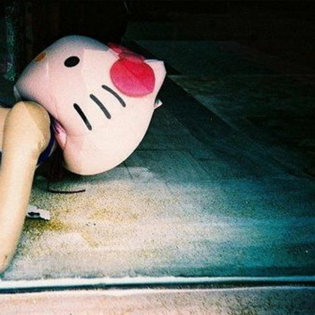

Maggie Chen was already dead by the time she understood why they'd taken her. Not physically — her heart still hammered against her ribs, her lungs still screamed for air in the hot, sealed apartment — but something essential had been carved out of her during the first three days. Hope, perhaps. Or the belief that the world operated on logic.
It began with a man named Brother Lok.
In the neon-soaked labyrinth of Tsim Sha Tsui, among the hostess bars where businessmen drank whiskey that cost more than monthly rents, Lok was a ghost story made flesh. He ran protection for half the clubs on Kimberley Street, and his temper was legendary — a switch that flipped from jovial to biblical in the span of a breath. When Maggie, working her Tuesday shift at the Golden Phoenix, accidentally spilled a $300 glass of scotch on his white linen suit, she'd laughed nervously and offered to pay for dry cleaning.
She didn't know about the money.
Three thousand Hong Kong dollars had gone missing from Lok's private safe three nights prior. A maid had been fired for it, beaten bloody in a back room and dumped at the hospital entrance. But Lok didn't believe in coincidences. When Maggie's trembling fingers brushed his thigh that night, trying to be charming, trying to fix her mistake, he smelled opportunity.
They took her at 4 AM, as she walked home through the wet streets where the dai pai dongs were hosing down their metal counters. A white van with tinted windows. Hands that smelled like cigarettes and seafood. A burlap sack that tasted like motor oil.
The apartment was on the fourteenth floor of a building that should have been condemned. The elevator hadn't worked in years. The walls were painted in layers of nicotine yellow and mold green, and the single window faced a brick wall three feet away. The bathroom had no door. The kitchen had no knives — Lok wasn't stupid — but it had other things. A clothes iron. A hammer. A soldering iron that sparked when you plugged it in.
There were four of them. Lok, of course. His cousin Andy, who had the flat, dead eyes of a man who watched too many execution videos. A kid named Simon, barely seventeen, who giggled when he was nervous and smelled like he'd pissed himself. And the girl.
Ah, the girl.
Her name was Mei, and she was fourteen years old. She was Lok's girlfriend, if you could call it that — a runaway from Guangzhou who'd traded her mother's beatings for something she thought was love. She didn't participate in the violence, not exactly. She just watched. She brought them instant noodles while Maggie screamed. She painted her nails in the corner while Lok explained, calmly, that Maggie had stolen from him, and that debts had to be paid with interest.
Maggie hadn't stolen anything. But after the first night, she would have confessed to anything.
They kept her in the bedroom, which was really just a closet with a mattress on the floor. The mattress had stains that told stories of previous occupants. They chained her to a radiator pipe with a dog collar, the metal kind with spikes on the inside. If she shifted wrong, if she fell asleep and slumped forward, the spikes bit into her throat.
The first week was about breaking her.
Lok had learned this from his grandfather, who'd been a Red Guard during the Cultural Revolution. You don't just hurt the body. You destroy the architecture of self. They made her crawl on the floor and bark like a dog. They made her eat from a bowl while they kicked her ribs. They burned her with cigarettes — not randomly, but in patterns, spelling out words she couldn't read in the mirror. WHORE. THIEF. PROPERTY.
Simon was the worst. He was trying to impress Lok, trying to prove he wasn't just some kid from the public housing estates. He experimented. He wanted to see how much a person could take before they stopped reacting. He used the iron on her feet. He used needles under her fingernails. He made her drink things — cleaning fluid, urine, once a whole bottle of soy sauce that swelled her tongue until she couldn't breathe.
Mei watched all of it. Sometimes she smiled. Sometimes she looked bored.
Maggie lost track of time. The room had no natural light. They played the same Cantopop album on loop — some saccharine love song about eternal devotion — until Maggie heard it in her dreams, until the violins became the soundtrack to her breaking.
By day ten, she couldn't stand upright anymore. Her feet were ruined, blistered masses of dead skin and exposed meat. Her left eye had swollen shut after Lok hit her with a phone book wrapped in tape. She'd stopped begging. She'd stopped screaming. She just made this sound — this wet, rhythmic whimper — like a dog left in a hot car.
They didn't want her to die. Not yet. Lok had plans. He was going to sell her to a brothel in Macau once she'd been properly trained, once she'd learned that resistance was just another form of pain. But he enjoyed the process too much. He stayed up for days on ice, his pupils blown wide and black, his skin greasy with sweat. He talked to her for hours about philosophy, about karma, about how she was paying for sins from a previous life.
"You were a murderer," he whispered, stroking her hair with hands that smelled like copper and chemicals. "In your last life. You killed babies. Now you're balancing the scales."
Maggie believed him. By then, she would have believed anything.
It was Mei who brought the doll.
She'd found it in a dumpster behind the Sogo department store — one of those massive Hello Kitty plushies they sold for Valentine's Day, three feet tall, dressed as a mermaid with sequined scales and a plastic crown. It was dirty, missing one eye, its stuffing coming out at the seams. Mei thought it was cute. She thought it would brighten up the apartment.
Lok had other ideas.
"She likes dolls," he said, looking at Maggie's hollow, ruined face. "Don't you, little thief? You never grew up. That's why you steal. You're a child."
He made Maggie hold the doll while they worked on her. He made her sing to it, nursery rhymes in her shredded voice, while Simon used the soldering iron. He made her apologize to the doll for being bad. He made her promise the doll that she'd be good from now on.
The doll watched with its one black eye.
Maggie started hallucinating around day twenty. The lack of sleep, the dehydration, the infections blooming under her skin like dark flowers. She saw things in the corner of the room — shadows that moved against the light, faces in the water stains on the ceiling. She became convinced that the doll was alive, that it was judging her, that it was hungry.
She wasn't wrong.
Mei started having dreams. She didn't tell anyone at first — dreams were weakness, and Lok had no patience for weakness. But every night, she saw the same thing: a woman with no face, standing in the corner of the bedroom, stroking the doll's plastic hair. The woman had Maggie's voice, but she spoke in a language Mei didn't understand. She spoke about debt. About interest. About payment coming due.
Mei woke up with nosebleeds. She woke up with scratches on her arms that she didn't remember making. She started avoiding the bedroom, started making excuses to go out for cigarettes, for bubble tea, for anywhere that wasn't the fourteenth floor.
Lok noticed. Lok always noticed.
"You're seeing her, aren't you?" he asked Mei one night, while Maggie wheezed in the other room, her breath coming in shallow gasps like a broken accordion. "The ghost. Don't lie to me, little bird. I see it in your eyes."
Mei denied it. She shouldn't have.
Lok hit her for the first time that night — a casual backhand that split her lip and sent her sprawling into the kitchen counter. It was a warning. In his world, there were only two kinds of people: those who caused pain and those who received it. Mei had forgotten which one she was.
But the hitting didn't stop the visions. If anything, they got worse.
Maggie died on the thirty-first day.
It wasn't dramatic. There was no final speech, no cinematic moment of transcendence. Her body simply gave up — too much damage, too much infection, too many systems failing at once. Her heart, which had been beating at twice its normal rate for weeks, trying to keep her alive, finally fluttered and stopped.
She died holding the doll.
Lok was furious. Not because she was dead — he'd grown bored of her, anyway — but because she'd robbed him of the sale. He'd been counting on that Macau money. He'd already spent it in his head on a new Rolex, on a down payment for a flat in Mid-Levels.
"Stupid bitch," he kept saying, kicking her body where it lay. "Stupid, selfish bitch."
They had to dispose of her. That was the problem. A body is evidence. A body is a life sentence.
They decided to dismember her in the bathtub. Andy had seen a documentary about how to do it — you cut at the joints, you separate the pieces, you distribute them in different districts. The head was the hardest part. You can't just throw a head in a dumpster. It's too recognizable. Too human.
It was Simon who suggested the doll.
"There's room inside," he said, his eyes bright and feverish. "I saw it on the internet. You can hollow them out. The stuffing comes right out."
They used a kitchen knife and a pair of scissors. They scooped out the white polyester filling until the doll was a hollow shell, a mermaid-shaped coffin. They washed Maggie's head as best they could — Simon threw up twice during this part — and they stuffed it inside. The doll's head was just big enough. The seams stretched. They used fishing line to sew it back up, crude stitches that held the skull in place like a macabre piñata.
They put the doll in the corner of the living room, facing the wall.
"She wanted to be with the doll so much," Lok laughed, high on ice and adrenaline and the godlike feeling of having ended a life. "Now she can be with it forever."
They dumped the rest of Maggie's body in three separate locations — the harbor, a construction site in Kowloon Bay, a landfill in the New Territories. They bleached the bathroom until it smelled like a swimming pool. They burned their clothes and bought new ones.
They thought that was the end of it.
Mei lasted three weeks.
She tried to be strong. She told herself that Maggie had deserved it, that she'd been a thief, that bad things happened to bad people. But the doll wouldn't let her sleep.
It started with sounds. Rustling in the living room when everyone was asleep. The sound of fabric tearing, of thread snapping. Then the smell — sweet and coppery, like rotting flowers and old pennies.
Then the dreams became waking visions.
Mei would walk past the doll and see its head turn, just a fraction of an inch. She would hear whispering coming from inside it — Maggie's voice, but wrong somehow, layered and buzzing like a chorus of flies. She would wake up with the taste of blood in her mouth, with scratches on her inner thighs that looked like fingernail marks.
She started wearing headphones everywhere. She stopped looking in mirrors. She stopped eating.
Lok thought she was being dramatic. He hit her again, harder this time, broke two of her ribs. But you can't beat a ghost into submission.
The breaking point came on a Tuesday night in May. Mei had been awake for four days — every time she closed her eyes, she saw Maggie standing over her, holding the doll, reaching into Mei's chest with hands that ended in broken syringes. She was hallucinating from exhaustion, from trauma, from whatever poison was leaking out of that stuffed mermaid in the corner.
She walked into the Tsim Sha Tsui police station at 3 AM, wearing pajamas that weren't hers, her feet bleeding from walking barefoot through the streets. She walked up to the duty sergeant — a tired old cop named Lau who'd seen everything in his thirty years on the force — and she said:
"She won't stop talking to me. She won't stop singing that song. She's in the doll. She's in the doll and she wants her body back."
Sergeant Lau almost dismissed her as just another crazy junkie. But then Mei started describing things she couldn't have known. The smell of the apartment. The specific brand of bleach they'd used. The pattern of the burns on Maggie's stomach — a spiral, starting at the navel, expanding outward.
And the doll. She described the doll in perfect detail. The missing eye. The sequins. The way the head sat just a little too heavy on the neck.
Lau sent a car to the address Mei gave him. He didn't expect to find anything. He expected another dead end, another waste of time in a city full of wasted time.
What they found would haunt him until the day he died.
The smell hit them in the stairwell, three floors down. It wasn't the smell of death — not exactly. It was sweeter than that, cloying, like a bakery where all the goods had gone rancid. It made the officers gag. It made their eyes water.
The door to 14C was unlocked. It swung open with a sound like a sigh.
The living room was a shrine to madness. The walls were covered in writing — not graffiti, but careful, meticulous script, thousands of words in black marker. Confessions. Apologies. Pleas for forgiveness. Lok had been writing for days, they would later learn, unable to stop, his hands moving independently of his will.
He was in the corner, alive but not conscious, his eyes rolled back to whites, his mouth open in a silent scream. He'd chewed off his own tongue. It lay on the floor in front of him like a discarded piece of meat.
Andy was in the bathroom. He'd drowned himself in the toilet — not intentionally, the coroner would rule, but through some kind of seizure. His body was rigid, his face frozen in an expression of perfect, infinite terror. His fingernails were torn off. He'd been trying to claw through the tile wall.
Simon was in the kitchen, hanging from a light fixture by an extension cord. But his neck wasn't broken — he'd been pulled up, not dropped down. Something had lifted him. Something strong.
And in the center of the living room, sitting on a chair like a guest waiting for tea, was the doll.
It was pristine. Clean. The one eye that remained seemed to gleam in the harsh fluorescent light. And from inside it — from deep within the polyester stuffing that had been carefully replaced — came a sound.
Singing.
Faint, muffled, but unmistakable. That same Cantopop song. That saccharine melody about eternal devotion.
The officers didn't touch it. They called for backup, for forensics, for a priest that one of the older cops knew from his village. They stood in the hallway, smoking cigarettes they didn't remember lighting, listening to that song play on loop from inside the doll's belly.
When they finally opened it — when a forensic technician with shaking hands cut the fishing line and pulled apart the seams — they found what was left of Maggie's head.
But it wasn't decomposed. Not properly. It was preserved, somehow, the skin waxy and firm, the eyes open and staring, the mouth curved into a smile that no living person could have made.
She looked peaceful. She looked satisfied.
And in her arms, clutched to her chest with rigor-mortis stiffness, was a photograph. It had been taken three weeks after her death, in a photo booth in Causeway Bay. It showed four people: Lok, Andy, Simon, and Mei.
They were all smiling. They were all holding the doll.
Mei hadn't remembered taking the photo. She swore she hadn't. But there she was, her face frozen in a rictus of joy, her eyes black and empty as tunnels.
The case never went to trial. Lok was committed to a psychiatric facility in Kwai Chung, where he remains to this day. He doesn't speak. He just sits in his room, rocking back and forth, singing that song under his breath. The nurses have to sedate him on the anniversary of Maggie's death, because on that day, every year, he screams for twelve hours straight.
Andy was cremated. His ashes were scattered in the harbor, but fishermen report seeing his face in the water sometimes, just below the surface, mouth open in a silent scream.
Simon was buried by his mother, who sold their flat and moved back to mainland China. She wrote a letter to the police before she left, claiming that she'd heard Simon's voice in her dreams, begging her to burn the doll, to find the doll, to kill it before it found someone new.
Mei disappeared. She was in protective custody for three days, and then she was gone. Some say she went back to Guangzhou. Some say she jumped from the Tsing Ma Bridge. Some say — and this is the part that keeps Sergeant Lau awake at night — that she went back to the apartment.
That she's still there. That she's taking care of the doll now.
The apartment building was demolished in 2005, part of a urban renewal project. They found nothing in the wreckage — no bones, no blood, no evidence of what had happened there. The doll was never recovered.
But the legend persists.
They say if you go to Tsim Sha Tsui on a rainy night, when the neon reflects off the wet streets and the city feels like a fever dream, you can still hear her. Not in any specific place — she moves. She finds the lonely ones, the desperate ones, the ones who owe debts they can't pay.
She appears in convenience stores, sitting on the shelf between the instant noodles and the battery display. She shows up in taxi backseats, just a glimpse in the rearview mirror. She sits in the windows of the hostess bars, watching the girls work, waiting for someone to make a mistake.
And if you see her — if you catch her one remaining eye and hold her gaze for too long — you'll start to hear the music. That song. That endless, saccharine loop.
You'll wake up with scratches on your arms. You'll smell copper and flowers everywhere you go. You'll start to see your own reflection a few seconds behind your movements, smiling when you're not, reaching for you when you look away.
Because Maggie's debt was paid, in the end. But debts have a way of multiplying. Interest compounds. And the doll is always hungry for new company.
In the back alleys of Hong Kong, they whisper that she's not alone in there. That there are others. A whole collection of heads, of voices, of songs sung in harmony from polyester throats.
And if you listen closely — really closely — on the nights when the humidity is high and the air tastes like metal, you can hear them.
Singing about eternal devotion.
Waiting for someone to take them home.
They say the doll is still out there. They say she's looking for a new owner.
They say she likes girls who work late shifts. Girls who owe money. Girls who've made mistakes.
They say she's very patient.
And they say, when she finds you, she doesn't just want to hurt you.
She wants to be friends.
Forever.